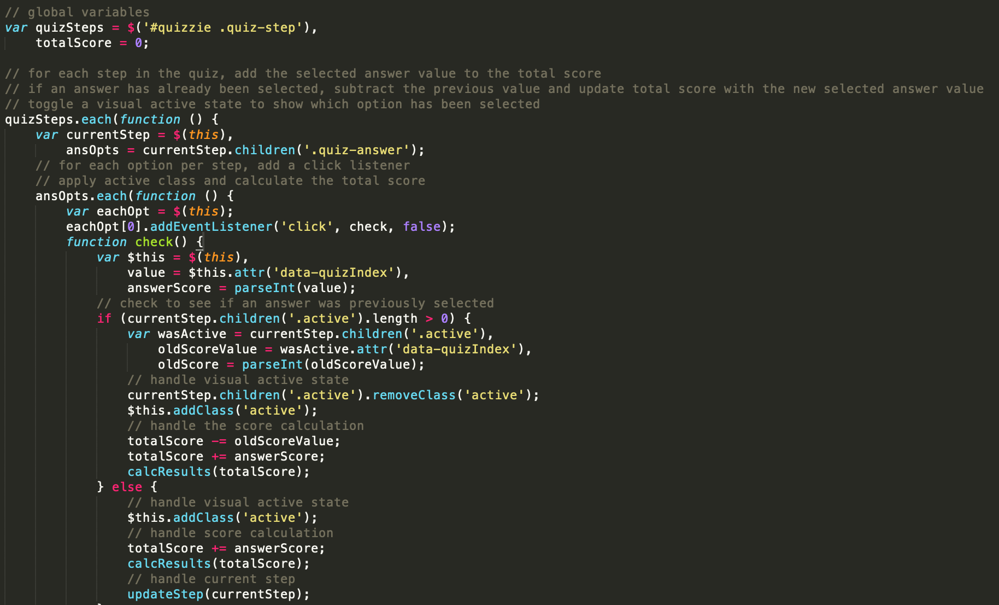
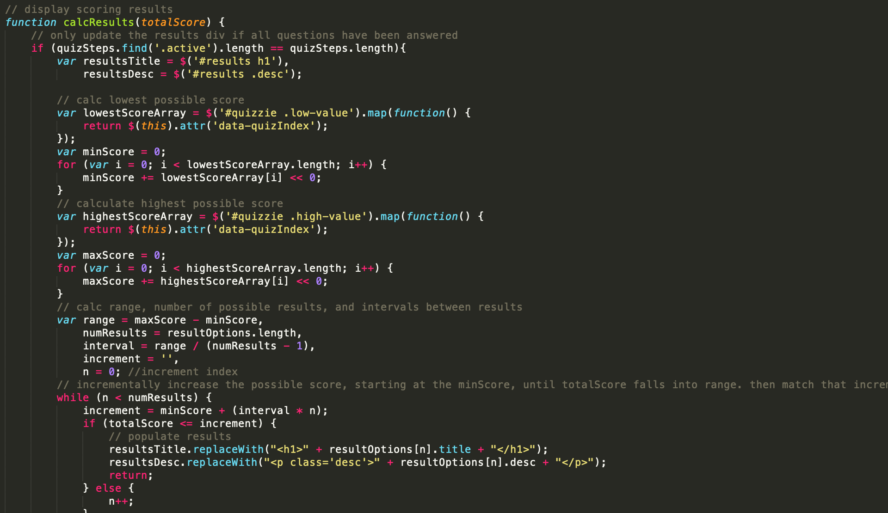

April 3rd, 2020
April 3rd, 2020
For my second blog post, I am going to take you through the process of how I designed my Javascript web application. The purpose of this application is to determine if you have the coronavirus based off of the questions provided. There are 4 total questions, each one asking if you have a certain symptom related to the coronavirus.
If the users answers are all 'yes' for the 4 questions, then the app returns the result that the user has the virus. If the user answers 'yes' to 3 out of the 4 questions, then the app returns the result that the user 'most likely' has the virus. That pattern continues for the other 3 possible outcomes.
When taking the quiz each question has a value that is added to the variable 'totalScore.' The end results are depended upon what the final calculation of the totalScore is. Once the last question has been answered, the function calcResults() is updated and the array resultOptions displays the correct index.
I also changed the background color of the section to a background image instead of a plain color and added a navbar that can return the user back to the portfolio page. I also added photos with each different result so that there is a better presentation to the results. 
The array 'resultOptions' holds the data that is displayed at the end of the quiz based on the given input from the user. Each index holds a title and description. The title gives the result while the description gives a comment and a photo to go along each result.

Jack Collins
The University of New Orleans
Email: jacolli4@uno.edu